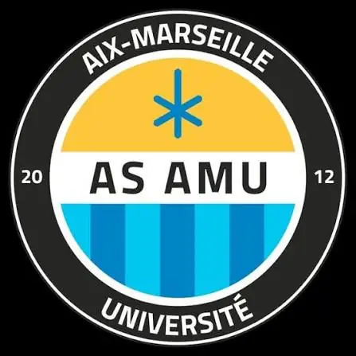
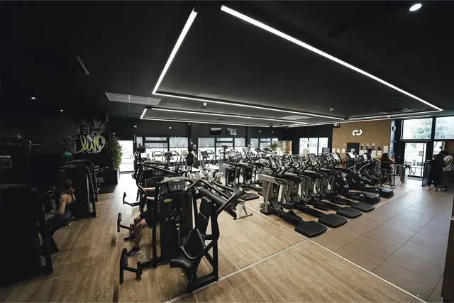
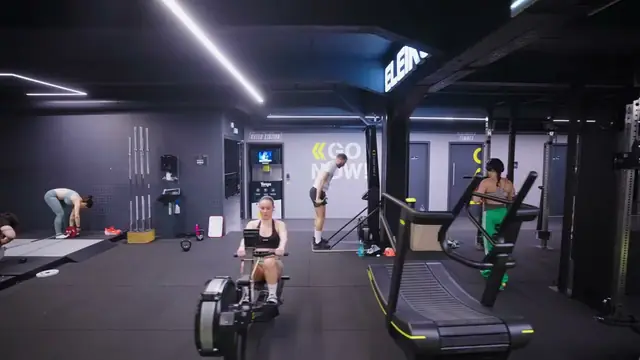
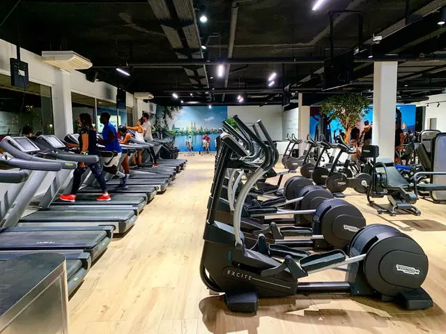
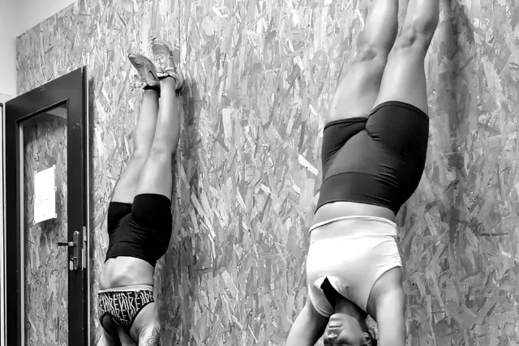
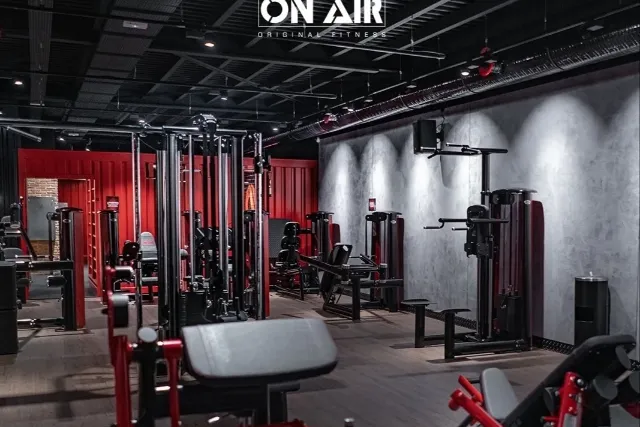
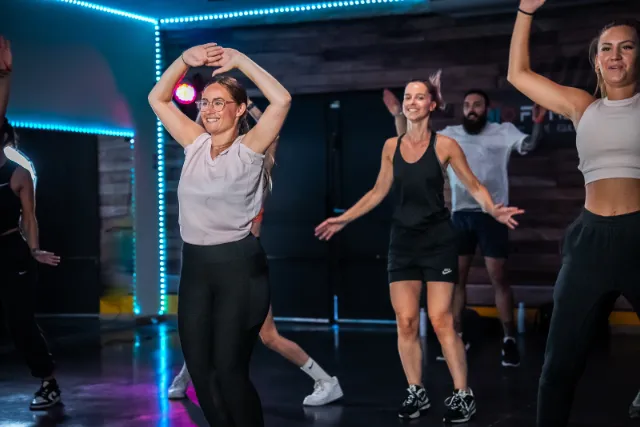
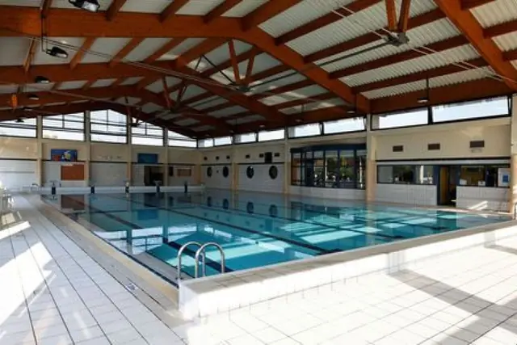
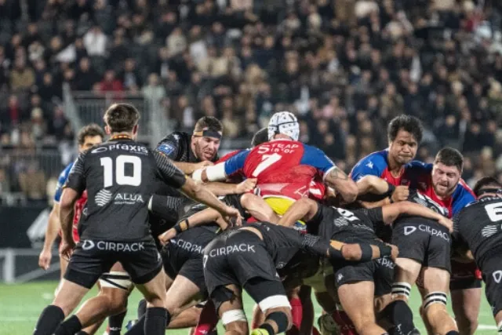

LE SPORT À AIX-EN-PROVENCE
Aix-en-Provence est une ville dynamique où le sport tient une place centrale, offrant un cadre idéal entre nature et infrastructures modernes pour tous les passionnés d'activité physique.
En tant qu'étudiant
La vie étudiante à Aix-en-Provence est rythmée par de nombreuses opportunités de bouger, que ce soit pour le loisir ou la compétition.
Le SUAPS
Le Service Universitaire des Activités Physiques et Sportives (SUAPS) propose une large gamme d'activités sportives pour les étudiants, allant des sports collectifs aux activités de bien-être.

En association

De nombreuses associations étudiantes organisent des événements sportifs, des tournois et des sorties, favorisant l'esprit d'équipe et la convivialité.
En plein air
Profitez du climat exceptionnel de la Provence pour pratiquer vos activités sportives favorites au grand air.
La montagne Sainte-Victoire
Aix-en-Provence est entourée de paysages naturels magnifiques, notamment la montagne Sainte-Victoire, qui offre de nombreuses opportunités de randonnée et d'activités en plein air.
Le parc Jourdan
Le parc Jourdan est un lieu idéal pour le jogging, le yoga en plein air et les activités de fitness, offrant un cadre verdoyant au cœur de la ville.
Le vélo
La ville dispose de nombreuses pistes cyclables et de sentiers adaptés pour les amateurs de vélo, permettant de découvrir Aix-en-Provence et ses environs à deux roues.
Dans les salles de sport
Keep Cool

Des salles conviviales et sans complexe, idéales pour s'entraîner à son rythme dans une ambiance détendue.
Basic Fit
Des espaces modernes et accessibles dotés d'équipements complets pour tous vos entraînements de musculation et de cardio.
Fitness Park

Un club grand format ultra-équipé, parfait pour repousser ses limites avec du matériel de pointe et des espaces variés.
One Fitness Club

Un club offrant une expérience complète avec des cours collectifs, des zones de musculation et un suivi professionnel pour atteindre vos objectifs.
Gaius Hybrid Club

Un club innovant combinant fitness, cross-training et bien-être pour une approche globale de la santé et de la forme physique.
On Air

Un espace moderne et dynamique proposant des cours collectifs variés et des programmes adaptés à tous les niveaux.
Biofitnessclub

Un club mettant l'accent sur le bien-être et la santé, avec des équipements de qualité et des programmes personnalisés pour chaque membre.
Neoness
Un club accessible et convivial, offrant des installations modernes et des cours collectifs pour tous les goûts et tous les niveaux.
À la piscine
Plongez au cœur des infrastructures aquatiques de la ville pour nager, vous perfectionner ou vous détendre.
Piscine Raymond Bochet
La piscine Raymond Bochet est un équipement moderne offrant des installations de qualité pour pratiquer la natation et d'autres activités aquatiques.
Piscine Yves Blanc
La piscine Yves Blanc propose un cadre agréable pour les séances de sport en eau et les activités de loisir aquatiques.
Piscine Claude Bollet

La piscine Claude Bollet est un lieu idéal pour les amateurs de natation et de fitness aquatique, avec des installations adaptées à tous les niveaux.
Supporter Aix
Provence Rugby

Le club phare de rugby de la région, qui enflamme le stade Maurice-David à chaque match de Pro D2 dans une super ambiance.
PAUC
Le club de handball d'Aix-en-Provence, qui évolue au meilleur niveau national et propose un spectacle sportif haletant.